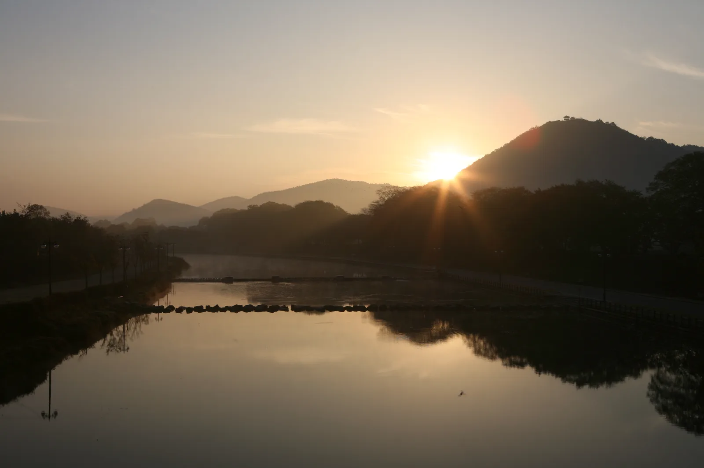
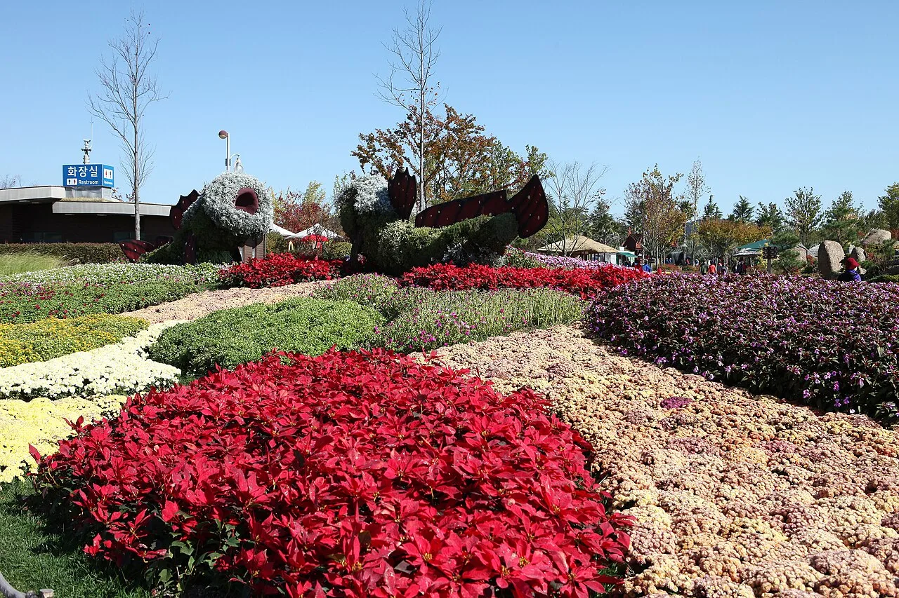
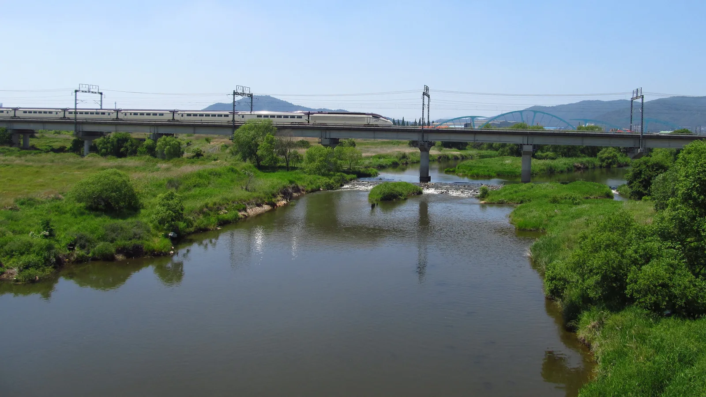
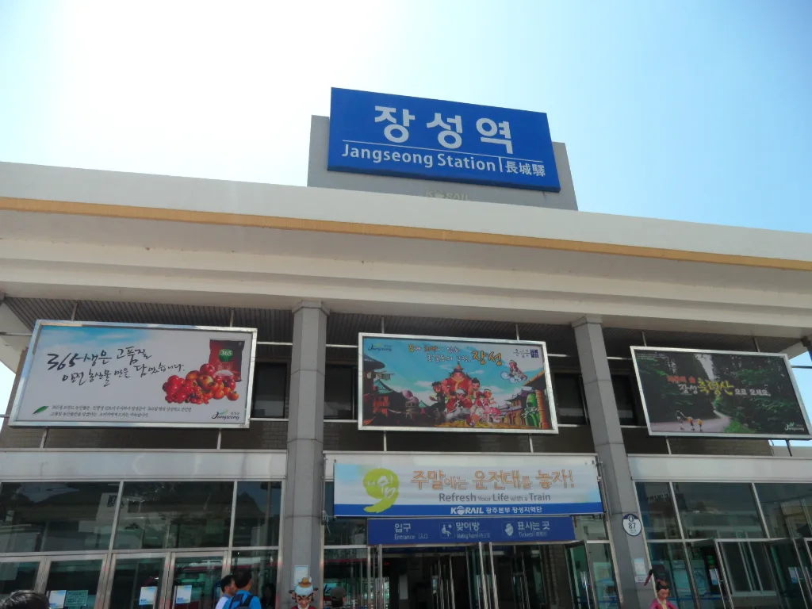
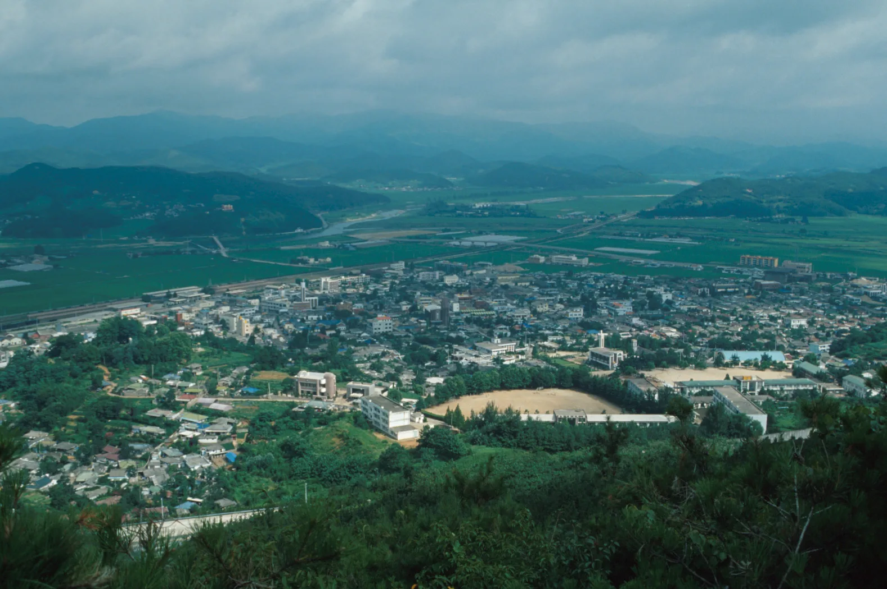

▲ 영산강 제1지류인 황룡강 수계의 저녁 풍경(전남 담양 구간). 황룡강 가을꽃축제는 이 물줄기를 따라 펼쳐진다 사진=Wikimedia Commons (Byungjoon Kim, CC BY 2.0)
1. 2026 황룡강 가을꽃축제, 언제 어디서 열리나
2026 황룡강 가을꽃축제는 10월 8일(목)부터 11일(일)까지 나흘간, 전남 장성군 장성읍 기산리 461-1 일원 황룡강변에서 열린다. 입장료는 무료다. 지난해까지 열흘 안팎으로 진행되던 축제 기간을 올해는 나흘로 줄이는 대신, 체험·공연 프로그램을 강화하는 쪽으로 방향을 바꿨다. 축제 문의는 장성군청 문화관광과(061-390-7252)로 하면 된다. 자세한 일정은 장성군 문화관광 홈페이지에서 확인 가능하다.
2. 강을 따라 4km, 어떤 꽃이 피어 있나
축제장은 황룡강변을 따라 약 4km(약 10리) 구간에 걸쳐 있다. 2016년 처음 시작된 이 축제는 해마다 100만 명 가까운 방문객을 끌어모았고, 2023년에는 전라남도 우수축제로도 선정됐다. 강변에는 백일홍과 천일홍, 해바라기, 코스모스, 핑크뮬리 등 100억 송이가 넘는 가을꽃이 심어져 있다. 구간별로 대표 꽃이 나뉘는데, 용작교와 황룡정원 주변은 백일홍·천일홍이 붉은 융단처럼 펼쳐져 일몰 무렵 노을과 어우러지고, 연꽃정원 주변은 코스모스 군락, 문화대교 인근은 핑크뮬리 군락이 자리한다.

▲ 국화·맨드라미 등으로 꾸며진 남도의 가을 화단(전남 순천만국가정원). 황룡강변에도 구간마다 다른 꽃으로 화단이 조성된다 사진=Wikimedia Commons (KOGL Type 1)
황룡강은 영산강의 제1지류로, 백암산 계곡에서 발원해 장성읍내를 가로질러 흐른다. 축제 조성 전에는 자갈밭에 가까웠던 둔치를 장성군이 꽃길로 바꾸면서 지금의 규모로 커졌다.
3. 밤에는 조명이, 주말엔 맥주 파티가
올해 축제 프로그램은 아래와 같다.
| 날짜 | 프로그램 | 비고 |
|---|---|---|
| 10월 8일(목) | 개막 공연(트로트 가수 무대) + 불꽃놀이 | 장한별·성리 등 |
| 10월 9일(금) | 어린이 뮤지컬 '나무들보 릴렉스' | 오전 11시 |
| 10월 9일(금) | 보컬 그룹 공연 | 어반자카파·가비앤제이 등 |
| 10월 10일(토) | J-라이트런 & 맥주 파티 | 오후 6시, 황룡정원~황미르랜드 2.5km 코스, 선착순 500명, 1잔당 1,000원에 맥주 2,000잔 준비, DJ 공연 동반 |
| 10월 11일(일) | 록밴드 공연 + 불꽃놀이 | YB·Red C 등 |
| 기간 내내 | 테마정원, 포토존, 플라워터널, 야간조명 | 야간조명은 용작교 일대 중심 |
| 어린이 프로그램 | 마술, 풍선아트, 비눗방울 쇼 | 황미르랜드, 9~11일, 황미르셔틀 왕복 1,000원 |
J-라이트런은 지난해 처음 선보여 호응을 얻은 야간 프로그램으로, 참가자들이 황룡정원에서 출발해 황미르랜드를 돌아오는 2.5km 코스를 달리며 좀비·저승사자 분장 스태프를 만나는 이색 체험이다. 올해는 여기에 맥주 파티(1잔 1,000원, 2,000잔 한정)와 DJ 공연이 더해졌다. 선착순 500명 한정이며, 참가 신청은 9월 28일부터 축제 공식 홈페이지에서 받는다.

▲ 억새와 화단 사이로 방향을 안내하는 표지판이 서 있는 남도의 가을 정원. 황룡강 축제장에도 이런 안내판과 포토존이 곳곳에 있다 사진=Wikimedia Commons (KOGL Type 1)
4. 축제장에서 5km — 홍길동의 고향, 홍길동테마파크
장성은 소설 『홍길동전』의 실존 모델로 알려진 홍길동의 고향으로 알려진 고장이다. 이 때문에 장성군은 20년 넘게 홍길동 축제를 이어왔고, 최근에는 이 전통을 황룡강 꽃길과 접목한 '황룡강 길동무 꽃길축제'를 함께 운영하며 봄가을 두 시즌의 꽃 축제를 대표 콘텐츠로 키우고 있다. 가을꽃축제장에서 차로 이동하면 약 5.1km 거리에 홍길동테마파크가 있어, 꽃구경 후 들르기에 부담 없는 거리다. 테마파크에는 홍길동 생가 터와 관련 전시, 체험 시설이 있다.

▲ 황룡강 하류, 광주 광산구 송정1교 인근을 가로지르는 고속철도. 장성 축제장은 이보다 상류에 있다 사진=Wikimedia Commons (LERK, CC BY-SA 4.0)
5. 장성읍내와 접근 교통
축제장이 있는 장성읍은 인구 규모가 크지 않은 소읍이지만, 황룡강을 끼고 있어 읍내 전체가 강과 맞닿아 있다. KTX와 무궁화호가 서는 장성역이 읍내에 있어 서울 등 수도권에서도 철도로 접근할 수 있다. 자가용을 이용할 경우 호남고속도로 장성IC를 거쳐 축제장까지 10분 안팎이면 닿는다.

▲ 장성역. 무궁화호·KTX가 정차해 수도권에서도 철도로 접근할 수 있다 사진=Wikimedia Commons (CC BY-SA 4.0)

▲ 산 정상에서 내려다본 장성읍 전경. 읍내를 가로지르는 물줄기가 황룡강이다 사진=Wikimedia Commons (KOGL Type 1, 한국학중앙연구원)
📍 방문 전 확인할 것
축제 기간이 나흘로 짧아진 만큼 주말(10일·11일)에는 강변 도로와 인근 주차장이 몰릴 수 있다. 정확한 주차장 위치와 무료 셔틀(황미르셔틀) 운행 정보는 공식 홈페이지에서 사전에 확인하는 것이 좋다. J-라이트런 등 선착순 프로그램은 사전 신청 여부도 함께 체크할 것.
6. 하루 코스로 정리하면
오후에 장성역이나 장성IC를 통해 도착해 황룡정원 일대 백일홍·천일홍 꽃길부터 걷고, 연꽃정원의 코스모스와 문화대교 인근 핑크뮬리 군락까지 강을 따라 이동하면 4km 구간을 자연스럽게 둘러보게 된다. 해 질 무렵에는 용작교 인근에서 노을과 어우러진 꽃밭을, 밤에는 야간 조명을 감상할 수 있다. 시간이 남으면 차로 5km 거리인 홍길동테마파크까지 묶어 하루 코스로 완성할 수 있다.
✅ 출발 전 확인할 것
· 축제 기간(10/8~10/11)과 공연·행사 시간은 공식 홈페이지에서 최종 확인
· J-라이트런 등 선착순 프로그램은 사전 신청 여부 확인
· 주말 방문 시 주차장·셔틀 운행 정보 미리 확인
· 강변 구간이 길어 편한 신발 권장